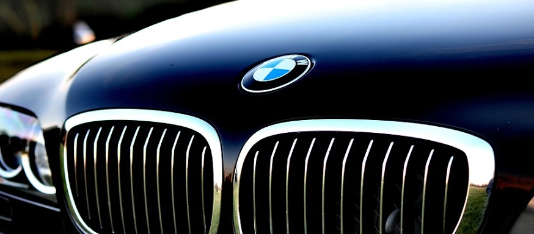

BMW 스포츠카와 대형세단에서의 추격
키드니 그릴의 모습
1933년은 BMW에게 큰 의미를 지닌 한 해였다. 자신들의 기술력으로 직접 만든 첫 모델 3/20PS를 내놓은 데 이어 베를린 모터쇼에서 BMW의 전통적인 6기통 엔진을 최초로 얹은 모델이자 3시리즈 중에서도 가장 유명한 ‘303’을 내놓았다. 303은 특히 BMW의 또 다른 전통인 콩팥 모양의 키드니(Kidney) 그릴이 적용된 첫 모델이기도 하다. BMW의 키드니 그릴은 일(Ihle)형제가 1931년 2인승 로드스터에 최초로 시험삼아 도입했다.

(BMW328 로드스터)
당시에는 벤츠는 정상의 자리에서 BMW를 내려다보고 있던 시점으로서 BMW는 벤츠에 대적할만한 스포츠카 생산이 그 어느 때보다 절실했다. 이는 BMW의 2인승 스포츠카 328(1971㏄, 80마력)이 탄생한 배경이 된다. 항공기를 모티브로 한 328은 특유의 유선형 디자인으로 주목을 끌었다. 20세기를 대표하는 25종의 車’에 꼽히기도 한 이 차는 1930년대를 대표하는 스포츠카로 우뚝서며 벤츠와의 경쟁구도를 이어가는 데 큰 공을 세웠다. 당시에는 벤츠는 정상의 자리에서 BMW를 내려다보고 있던 시점으로서 BMW는 벤츠에 대적할만한 스포츠카 생산이 그 어느 때보다 절실했다. 이는 BMW의 2인승 스포츠카 328(1971㏄, 80마력)이 탄생한 배경이 된다. 항공기를 모티브로 한 328은 특유의 유선형 디자인으로 주목을 끌었다. 20세기를 대표하는 25종의 車’에 꼽히기도 한 이 차는 1930년대를 대표하는 스포츠카로 우뚝서며 벤츠와의 경쟁구도를 이어가는 데 큰 공을 세웠다.
BMW는 이후 1972년 뮌헨올림픽을 계기로 출시한 패밀리카 ‘5시리즈’를 통해 중형 세단 메이커로서의 명성을 쌓아갔다.

(1960년대 등장한 'BMW1500'의 성공으로 BMW는 도약의 계기를 마련한다.)
1세대부터 인기 꾸준…신형 7시리즈까지 국내 선봬

(2세대 BMW 7시리즈)
1977년에 와서야 BMW는 고급 세단 메이커로의 이름을 알리게 된다. 바로 7시리즈의 출시를 통해서다. 벤츠의 S클래스에 대항하는 고급 세단이 절실했던 BMW는 원형의 트원 헤드라이트와 키드니 그릴, 입체감이 살아있는 후드를 통해 존재감을 과시했다.
3세대 7시리즈는 8기통 엔진이 탑재된 730i와 740i를 비롯해 12기통 엔진의 750i를 출시했다. 3세대는 2001년까지 총 32만7600여대를 판매하며 고급 세단의 대표주자로 명성을 이어갔다.

(3세대 BMW 7시리즈)

(4세대 BMW 7시리즈)
최고출력 445마력과 최대토크 61.2㎏·m의 760i를 필두로 한 4세대 7시리즈는 럭셔리카 부분 글로벌 판매량 1위(2004년)를 차지하는 등 전체 시리즈 모델 중에서도 가장 높은 인기를 모았다.
(신형 BMW 7시리즈)
BMW 7시리즈(730d) 제원
엔진 형식 : 3.0ℓ 6기통 트윈파워 터보 디젤 / 배기량 : 2993㏄ / 최고속도 : 250㎞/h / 최대출력 : 258hp·4000rpm / 최대토크 : 57.1㎏·m·1500rpm / 전장 X 폭 X 전고 : 5079㎜ X 1902㎜ X 1471㎜